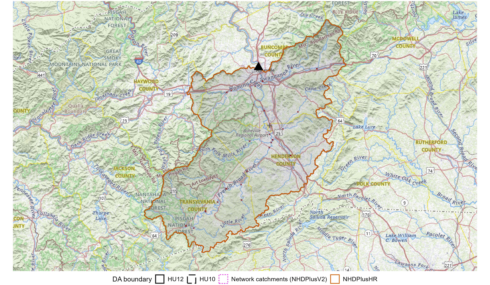
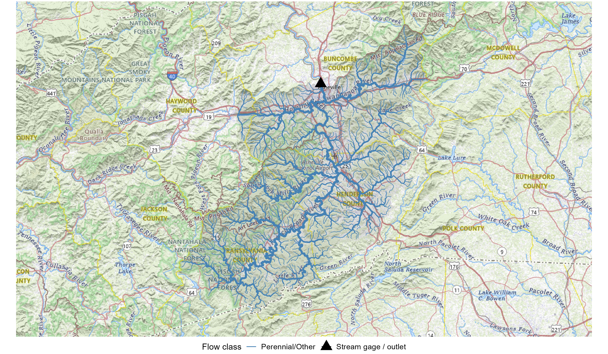
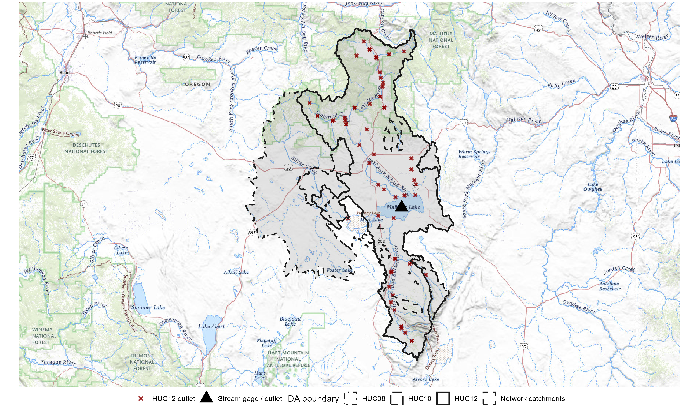
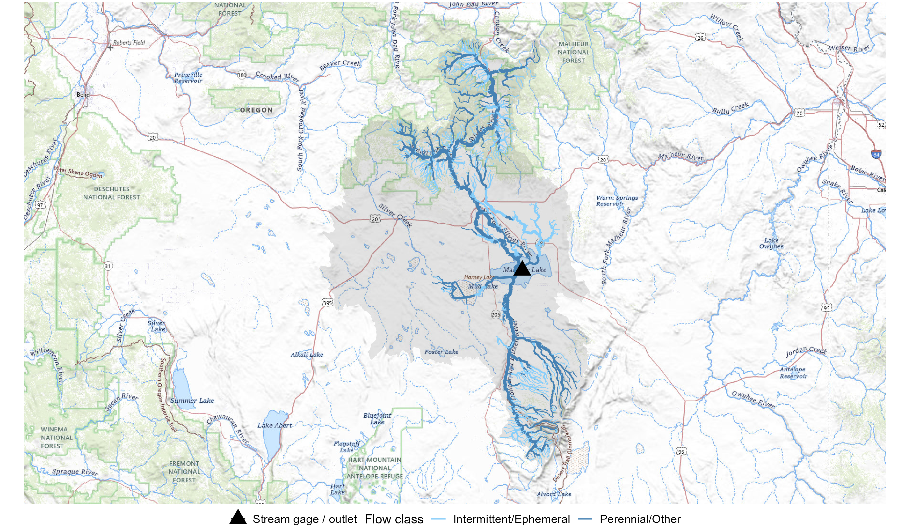
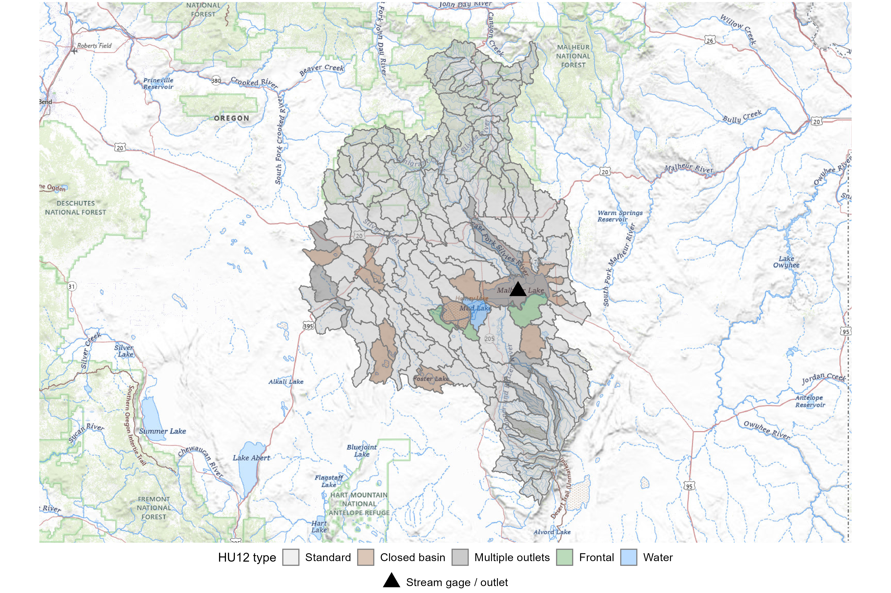
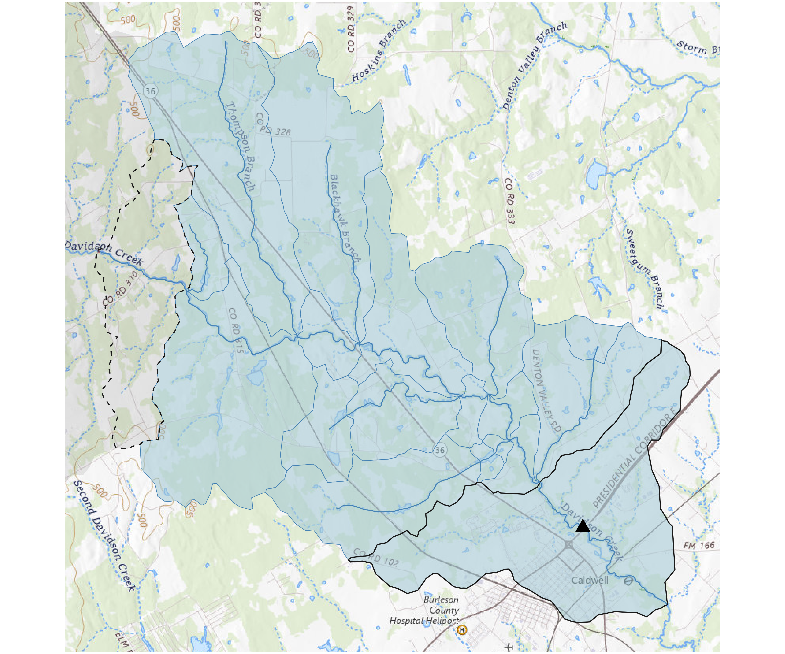
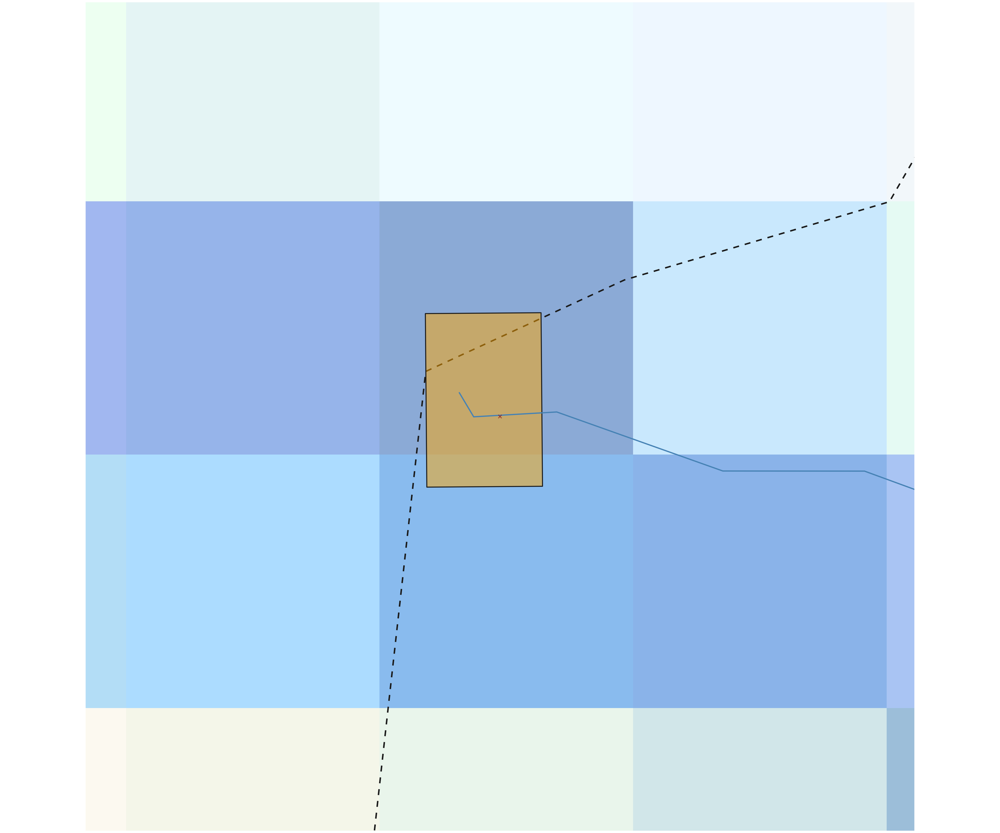
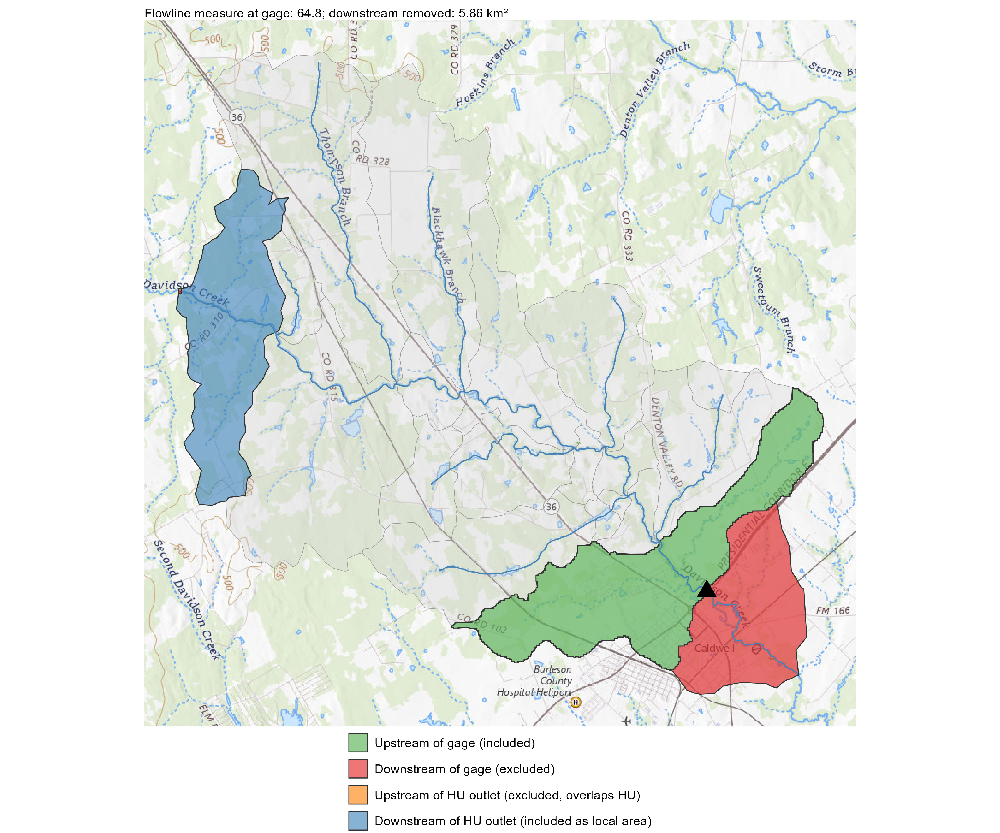

Drainage Area Estimation
dblodgett@usgs.gov
Source:vignettes/articles/drainage_area_estimation.Rmd
drainage_area_estimation.RmdA fully rendered version of this vignette with figures is available at https://doi-usgs.github.io/nhdplusTools/articles/drainage_area_estimation.html.
get_drainage_area_estimates() combines Watershed
Boundary Dataset (WBD) delineations and non-surface-contributing area
estimates with National Hydrography Dataset Plus version 2 (NHDPlusV2)
catchment areas for the gap between a basin outlet and the nearest
upstream HU12. Non-contributing areas captured in HU12 boundaries are
included.
This vignette shows output of the function on five basins that span a range of hydrologic settings – from basins where topographic signal dominates to arid, glacial, and endorheic settings where it does not.
How get_drainage_area_estimates() Works
The function produces drainage area estimates by stitching together
two kinds of spatial data: HU12 polygon areas for the bulk of the
upstream basin and NHDPlusV2 catchment areas for the gap between the
gage (or other outlet) and the nearest upstream HU12 boundaries. Because
HU12 polygons carry a non-contributing area attribute
(ncontrb_a) and non-surface-contributing HU12s can be
retrieved from HU10 or HU8 groupings, the estimates separate total
drainage area from surface network contributing drainage area.
Algorithm Steps
Resolve the start feature. A Network Linked Data Index (NLDI) feature list (e.g.
featureSource = "nwissite", featureID = "USGS-05406500") is resolved to an NHDPlusV2 COMID via the NLDI. Ansfc_POINTinside a waterbody triggers a waterbody lookup to find all outlet flowlines.Negotiate the outlet catchment. For gage-based starts, the function computes where the gage sits along its outlet flowline as a 0–100 measure. This measure determines whether the outlet catchment needs to be split (see Catchment splitting below).
Fetch the upstream network and HU12 pour points. The full upstream flowline network is retrieved along with all HU12 pour points on that network. These pour points mark the downstream outlet of each HU12 watershed unit that drains to the gage.
Identify immediate HU12 outlets. A network navigation finds which HU12 outlets are directly upstream of the gage with no intervening HU12 outlet. These define the boundary between the “HU zone” (covered by HU12 polygon areas) and the “gap zone” (covered by individual catchment areas).
Fetch and assemble HU12 polygons. HU12 polygons are retrieved at three query levels: the specific NLDI-identified HU12 IDs, all HU12s within upstream HU10 boundaries, and all HU12s within upstream HU8 boundaries. The broader queries can capture HU12s that share a parent HU but lack an on-network pour point – common in prairie-pothole and playa-dominated landscapes. A disconnect filter removes HU12s pulled incidentally by the broader queries that are not hydrologically connected. Each level is a superset of the narrower level, and each produces both a total and a contributing-only area estimate.
Compute gap area. Catchment areas between the gage and the immediate HU12 outlets are summed. Split-catchment logic is applied at both the HU12 outlets and (optionally) the gage point.
Assemble scalar estimates. Six drainage area estimates are computed: total and contributing at the HU12, HU10, and HU8 query levels. Each equals the HU12 polygon area sum plus the gap area. A seventh scalar,
network_da_sqkm, is the NHDPlusV2 cumulative drainage area at the outlet – a comparison baseline.NHDPlus High Resolution (NHDPlusHR) estimate (optional). When
nhdplushr = TRUE, the function fetches NHDPlusHR flowlines and catchments for the basin bounding box, indexes the start point to the HR network (disambiguating by drainage area), navigates upstream, and sums catchment areas.
Catchment Splitting
When a gage sits partway along a flowline rather than at its outlet,
the downstream portion of the catchment does not contribute to the gage.
The function calls the NLDI split-catchment service to divide the
catchment at the gage point and counts only the upstream portion. The
outlet_split_threshold_m parameter (default 100 m) sets the
minimum gage-to-outlet distance before splitting is performed; if the
gage is closer than this threshold, the full catchment is used.
A parallel split occurs at HU12 outlets: the HU boundary cuts through a catchment, and the portion upstream of the pour point overlaps with HU12 area already counted. The split-catchment service divides this catchment and the upstream overlap is excluded from the gap area to avoid double-counting.
The Outlet Catchment Splitting section later in this vignette illustrates both splits using Davidson Creek (USGS streamgage 08110075).
Running with Local Data
Three parameters reduce dependence on web services:
local_navigation = TRUEloads the NHDPlusV2 Value Added Attributes viaget_vaa()for network navigation and flowline attribute lookups. Only HU12 pour points are still fetched from the NLDI.huc12_dataaccepts a pre-loadedsfdata.frame of HU12 polygons (e.g. from the WBD National Geodatabase). When provided, all HU12 polygon queries are resolved by subsetting this table locally instead of calling WBD web services. The table must includehuc_12andncontrb_acolumns (case-insensitive).huc12_outletsaccepts either a path to a GPKG or a pre-loadedsfdata.frame of on-network HU12 pour points. A national CONUS file is available from Blodgett, D.L., 2022, Mainstem Rivers of the Conterminous United States (ver. 3.0, February 2026): U.S. Geological Survey data release, doi:10.5066/P13LNDDQ – use thehu_pointslayer offinalwbd_outlets.gpkg. The function renamesCOMIDandFinalWBD_HUC12tocomidandidentifierand filters the table to the upstream network automatically. When supplied, no NLDIhuc12ppqueries are issued.
Using all three together eliminates all WBD and NLDI
huc12pp calls and most flowline attribute calls. The
offline call looks like:
result <- get_drainage_area_estimates(
start, local_navigation = TRUE,
huc12_data = wbd_sf,
huc12_outlets = "path/to/finalwbd_outlets.gpkg"
)Web Services and Performance
By default the function contacts several web services. Each adds latency and is subject to rate limits or outages:
NLDI (
findNLDI): resolves the start feature, navigates the upstream network, and retrieves HU12 pour points. Thehuc12ppquery is skipped whenhuc12_outletsis supplied.NHDPlusV2 OGC API (
get_nhdplus): fetches flowline attributes, catchment geometries in the gap zone, and (whencatchments = TRUE) the full upstream catchment polygon set. Skipped for flowline attributes whenlocal_navigation = TRUE.WBD / HU service (
get_huc,get_huc12_by_huc): fetches HU12 polygons by ID or by parent HU. Skipped whenhuc12_datais provided.Split-catchment service (
get_split_catchment): divides catchments at HU12 outlets and at the gage point. Always called.NHDPlusHR service (
get_nhdphr): fetches high-resolution flowlines and catchments for the basin bounding box. Skipped whennhdplushr = FALSE.
For large basins (e.g. the Brazos at Rosharon) the cumulative time
for these calls can be substantial. Setting
nhdplushr = FALSE eliminates the most expensive single
call. Providing huc12_data and using
local_navigation = TRUE together can reduce total run time
to a fraction of the default, at the cost of requiring local data files.
The vignette’s fetch_or_load wrapper caches results as RDS
files so that repeated runs avoid repeating the web service calls
entirely.
Fetch and Cache Results
Each basin result is stored in a separate RDS file in the hydrogeofetch data directory so that subsequent runs skip the web service calls.
library(sf)
#> Linking to GEOS 3.14.1, GDAL 3.12.1, PROJ 9.7.1; sf_use_s2() is TRUE
data_dir <- hydrogeofetch_data_dir()
dir.create(data_dir, recursive = TRUE, showWarnings = FALSE)
# On-network HU12 pour points from the Mainstem Rivers data release
# (Blodgett 2022, doi:10.5066/P13LNDDQ). Downloaded once and cached so
# subsequent builds reuse the local file instead of hitting the NLDI.
outlets_path <- file.path(data_dir, "finalwbd_outlets.gpkg")
outlets_url <- paste0(
"https://prod-is-usgs-sb-prod-publish.s3.amazonaws.com/",
"65cbc0b3d34ef4b119cb37e9/finalwbd_outlets.gpkg")
if(!file.exists(outlets_path)) {
message("Downloading HU12 outlets GPKG to ", outlets_path)
download.file(outlets_url, outlets_path, mode = "wb")
}
# Define the six study sites
sites <- list(
black_earth = list(featureSource = "nwissite",
featureID = "USGS-05406500"),
french_broad = list(featureSource = "nwissite",
featureID = "USGS-03451500"),
brazos = list(featureSource = "nwissite",
featureID = "USGS-08116650"),
james = list(featureSource = "nwissite",
featureID = "USGS-06468000"),
malheur = st_sfc(st_point(c(-118.8, 43.3)), crs = 4326),
purgatoire = list(featureSource = "nwissite",
featureID = "USGS-07128500"),
davidson = list(featureSource = "nwissite",
featureID = "USGS-08110075")
)
# Skip NHDPlusHR for large basins to keep fetch times reasonable
hr_basins <- c("black_earth", "french_broad", "davidson", "purgatoire",
"james")
fetch_or_load <- function(name, start) {
rds_path <- file.path(data_dir,
paste0("da_est_", name, ".rds"))
if(file.exists(rds_path)) {
message("Loading cached: ", name)
return(readRDS(rds_path))
}
message("Fetching: ", name)
result <- tryCatch(
get_drainage_area_estimates(start, catchments = TRUE,
huc12_data = huc12,
huc12_outlets = outlets_path,
waterbody_data = waterbody_data,
catchment_data = catchment_data,
local_navigation = TRUE,
nhdplushr = name %in% hr_basins),
error = function(e) {
warning("Failed for ", name, ": ", conditionMessage(e),
call. = FALSE)
NULL
})
if(!is.null(result)) saveRDS(result, rds_path)
result
}
da_results <- Map(fetch_or_load, names(sites), sites)
#> Loading cached: black_earth
#> Loading cached: french_broad
#> Loading cached: brazos
#> Loading cached: james
#> Loading cached: malheur
#> Loading cached: purgatoire
#> Loading cached: davidson
da_results <- Filter(Negate(is.null), da_results)
fetch_flowlines <- function(name, da_result) {
rds_path <- file.path(data_dir, paste0("fl_", name, ".rds"))
if(file.exists(rds_path)) {
message("Loading cached flowlines: ", name)
return(readRDS(rds_path))
}
message("Fetching flowlines: ", name)
comids <- da_result$all_network$comid
fl <- if(!is.null(flowlines_data)) {
message(" Subsetting from local NHDFlowline_Network...")
flowlines_data[flowlines_data$comid %in% comids, ]
} else {
tryCatch(
get_nhdplus(comid = comids, realization = "flowline"),
error = function(e) {
warning("Flowline fetch failed for ", name, ": ",
conditionMessage(e), call. = FALSE)
NULL
})
}
if(!is.null(fl) && nrow(fl) > 0) saveRDS(fl, rds_path)
fl
}
flowlines <- Map(fetch_flowlines, names(da_results), da_results)
#> Loading cached flowlines: black_earth
#> Loading cached flowlines: french_broad
#> Loading cached flowlines: brazos
#> Loading cached flowlines: james
#> Loading cached flowlines: malheur
#> Loading cached flowlines: purgatoire
#> Loading cached flowlines: davidson
flowlines <- Filter(Negate(is.null), flowlines)
# Fetch NWIS drainage area for sites with an nwissite featureSource
nwis_ids <- vapply(sites, function(s) {
if(is.list(s) && identical(s$featureSource, "nwissite"))
s$featureID else NA_character_
}, character(1))
nwis_ids <- nwis_ids[!is.na(nwis_ids)]
nwis_da <- if(length(nwis_ids) > 0) {
tryCatch({
ml <- dataRetrieval::read_waterdata_monitoring_location(
unname(nwis_ids))
# Match returned rows back to site names by monitoring_location_id
idx <- match(nwis_ids, ml$monitoring_location_id)
# drainage_area and contributing_drainage_area are in sq miles
data.frame(
name = names(nwis_ids),
nwis_da_sqmi = ml$drainage_area[idx],
nwis_contrib_da_sqmi = ml$contributing_drainage_area[idx],
nwis_da_sqkm = ml$drainage_area[idx] * 2.58999,
nwis_contrib_da_sqkm = ml$contributing_drainage_area[idx] *
2.58999,
stringsAsFactors = FALSE
)
}, error = function(e) {
warning("NWIS site fetch failed: ", conditionMessage(e),
call. = FALSE)
NULL
})
} else NULL
#> Requesting:
#> https://api.waterdata.usgs.gov/ogcapi/v0/collections/monitoring-locations/items?f=json&lang=en-US&limit=50000&id=USGS-05406500,USGS-03451500,USGS-08116650,USGS-06468000,USGS-07128500,USGS-08110075Return Structure
Each result is a list with scalar drainage area estimates and spatial data frames. Here are the elements for Black Earth Creek:
names(da_results$black_earth)
#> [1] "da_huc12_sqkm" "da_huc10_sqkm"
#> [3] "da_huc08_sqkm" "contrib_da_huc12_sqkm"
#> [5] "contrib_da_huc10_sqkm" "contrib_da_huc08_sqkm"
#> [7] "network_da_sqkm" "nhdplushr_network_dasqkm"
#> [9] "nhdplushr_boundary" "start_feature"
#> [11] "hu12_by_huc12" "hu12_by_huc10"
#> [13] "hu12_by_huc08" "extra_catchments"
#> [15] "split_catchment" "all_network"
#> [17] "all_catchments" "outlet_flowline_measure"
#> [19] "outlet_split_catchment" "hu12_outlet"The scalar estimates (square kilometers) across all basins:
basin_labels <- c(
black_earth = "Black Earth Creek",
french_broad = "French Broad",
brazos = "Brazos at Rosharon",
james = "James River",
malheur = "Malheur Lake",
davidson = "Davidson Creek",
purgatoire = "Purgatoire River"
)
summary_df <- data.frame(
basin = basin_labels[names(da_results)],
network_da = vapply(da_results, \(x) x$network_da_sqkm, numeric(1)),
da_huc12 = vapply(da_results, \(x) x$da_huc12_sqkm, numeric(1)),
da_huc10 = vapply(da_results,
\(x) ifelse(is.na(x$da_huc10_sqkm), NA_real_, x$da_huc10_sqkm),
numeric(1)),
da_huc08 = vapply(da_results,
\(x) ifelse(is.na(x$da_huc08_sqkm), NA_real_, x$da_huc08_sqkm),
numeric(1)),
nhdplushr = vapply(da_results,
\(x) ifelse(is.na(x$nhdplushr_network_dasqkm), NA_real_,
x$nhdplushr_network_dasqkm),
numeric(1))
)
# Add NWIS drainage areas where available
if(!is.null(nwis_da)) {
summary_df$nwis_da <- ifelse(
names(da_results) %in% nwis_da$name,
nwis_da$nwis_da_sqkm[match(names(da_results), nwis_da$name)],
NA_real_)
summary_df$nwis_contrib_da <- ifelse(
names(da_results) %in% nwis_da$name,
nwis_da$nwis_contrib_da_sqkm[match(names(da_results), nwis_da$name)],
NA_real_)
} else {
summary_df$nwis_da <- NA_real_
summary_df$nwis_contrib_da <- NA_real_
}
knitr::kable(summary_df, digits = 1,
col.names = c("Basin", "Network DA", "HU12 DA",
"HU10 DA", "HU8 DA", "NHDPlusHR DA",
"NWIS DA", "NWIS Contributing DA"),
caption = "Drainage area estimates (sq km) by basin and method")| Basin | Network DA | HU12 DA | HU10 DA | HU8 DA | NHDPlusHR DA | NWIS DA | NWIS Contributing DA | |
|---|---|---|---|---|---|---|---|---|
| black_earth | Black Earth Creek | 114.3 | 118.0 | NA | NA | 107.1 | 118.1 | 110.9 |
| french_broad | French Broad | 2446.9 | 2446.0 | 2446.0 | NA | 2446.3 | 2447.5 | NA |
| brazos | Brazos at Rosharon | 103578.2 | 99672.7 | 108939.7 | 118107.4 | NA | 117427.6 | 92651.7 |
| james | James River | 1442.4 | 1436.6 | 1655.5 | NA | 620.4 | 1849.3 | 722.6 |
| malheur | Malheur Lake | 4585.6 | 7307.9 | 9096.7 | 12840.2 | NA | NA | NA |
| purgatoire | Purgatoire River | 8930.0 | 8875.0 | 8875.0 | NA | 8217.8 | 8912.2 | 8881.6 |
| davidson | Davidson Creek | 183.9 | 176.0 | NA | NA | NA | 178.5 | 178.5 |
Basin Vignettes
French Broad River at Asheville
Well-determined basin with strong topographic signal (USGS streamgage 03451500). Contributing area essentially equals total drainage area across all sources.
Drainage Area Boundaries
plot_boundaries(da_results$french_broad, "French Broad")
basin_summary_table(da_results$french_broad, "french_broad")| Source | Area (sq km) |
|---|---|
| Network | 2446.9 |
| HU12 | 2446.0 |
| HU10 | 2446.0 |
| HU8 | NA |
| NHDPlusHR | 2446.3 |
| NWIS | 2447.5 |
| NWIS contributing | NA |
- All boundary sources converge tightly around the same watershed outline.
- The HU12-, HU10-, and HU8-derived boundaries are nearly identical, consistent with a basin whose divides are topographically unambiguous.
- The gage (triangle) sits on the main stem French Broad River at Asheville.
Stream Network
plot_network(da_results$french_broad, flowlines$french_broad,
"French Broad")
- The network is predominantly perennial with dense tributary coverage in the Appalachian headwaters.
- Intermittent reaches are sparse, concentrated in low-order headwater channels.
- HU12 outlets (x markers) align with major tributary junctions.

Brazos River, West Texas
Arid/ephemeral connectivity basin (USGS streamgage 08116650). Transmission losses and disconnected uplands create large differences between total and contributing drainage area.
Drainage Area Boundaries
plot_boundaries(da_results$brazos, "Brazos at Rosharon")
basin_summary_table(da_results$brazos, "brazos")| Source | Area (sq km) |
|---|---|
| Network | 103578.2 |
| HU12 | 99672.7 |
| HU10 | 108939.7 |
| HU8 | 118107.4 |
| NHDPlusHR | NA |
| NWIS | 117427.6 |
| NWIS contributing | 92651.7 |
- Boundary sources diverge substantially. HU-derived boundaries extend further west into arid uplands than the network-derived boundary.
- The gap between HU12 total area and contributing area reflects large noncontributing designations in western sub-basins.
Stream Network
plot_network_brazos(da_results$brazos, flowlines$brazos,
"Brazos at Rosharon")
#> Coordinate system already present.
#> ℹ Adding new coordinate system, which will replace the existing one.
- Extensive intermittent and ephemeral reaches dominate the western (upstream) portion of the basin.
- Perennial flow is concentrated in the lower main stem and major tributaries east of the Caprock Escarpment, the physiographic boundary between the High Plains (Llano Estacado) and the Rolling Plains traced on the figure.
- The transition from ephemeral headwaters to perennial mainstem illustrates why contributing area is smaller than total area.
HU12 Types
plot_type(da_results$brazos, flowlines$brazos,
"Brazos at Rosharon")
- Closed-basin HU12s (brown) concentrate in the arid western uplands of the Llano Estacado, where surface water never reaches the Brazos.
- Multiple-outlet HU12s (grey) have more than one outlet to the same downstream system — for example, a HU12 with a braided channel where flow leaves through more than one point.
- Frontal HU12s (green), where present, are coastal units that drain directly to the Gulf of Mexico rather than to a downstream HU12.
- Standard HU12s (light grey) dominate the perennial eastern main stem.
James River / Cottonwood Lake
Glacial prairie basin (USGS streamgage 06468000). Prairie potholes create a large noncontributing fraction that varies by sub-basin.
Drainage Area Boundaries
plot_boundaries(da_results$james, "James River")
basin_summary_table(da_results$james, "james")| Source | Area (sq km) |
|---|---|
| Network | 1442.4 |
| HU12 | 1436.6 |
| HU10 | 1655.5 |
| HU8 | NA |
| NHDPlusHR | 620.4 |
| NWIS | 1849.3 |
| NWIS contributing | 722.6 |
- Boundary estimates diverge in the upper basin where glacial topography creates ambiguous divides.
- The HU12-derived total area exceeds the contributing area by a notable margin, reflecting prairie pothole storage.
Stream Network
plot_network(da_results$james, flowlines$james, "James River")
- The network includes a mix of perennial and intermittent reaches.
- Intermittent channels are common in the upper basin where glacial drift creates closed depressions and episodic connectivity.
- The lower main stem is perennial and well-defined.

Black Earth Creek
Small Driftless-Area basin in southern Wisconsin (USGS streamgage 05406500). Well-determined drainage area with minimal noncontributing fraction.
Drainage Area Boundaries
plot_boundaries(da_results$black_earth, "Black Earth Creek")
basin_summary_table(da_results$black_earth, "black_earth")| Source | Area (sq km) |
|---|---|
| Network | 114.3 |
| HU12 | 118.0 |
| HU10 | NA |
| HU8 | NA |
| NHDPlusHR | 107.1 |
| NWIS | 118.1 |
| NWIS contributing | 110.9 |
- All boundary sources converge on a compact watershed outline.
- The basin is small enough to fall within a single HU10, so HU10- and HU8-level boundaries are not computed separately.


Malheur Lake
Malheur Lake basin is an endorheic (closed) basin with no surface outlet. The terminal feature is a lake rather than a stream gage.
Because the start point falls in a closed-basin HU12 (Malheur Lake,
171200010710) with no flowline pour point on the NHD network,
get_drainage_area_estimates() auto-promotes the parent
HUC10 (1712000107) into HU_inclusion_override. The HU08
estimate then spans the full Harney-Malheur HU8 17120001 – including the
lake itself, Harney Lake, and the frontal HU12s along the lake margins –
rather than only the on-network HU12s reachable from the inflow
tributaries.
Drainage Area Boundaries
plot_boundaries(da_results$malheur, "Malheur Lake")
basin_summary_table(da_results$malheur, "malheur")| Source | Area (sq km) |
|---|---|
| Network | 4585.6 |
| HU12 | 7307.9 |
| HU10 | 9096.7 |
| HU8 | 12840.2 |
| NHDPlusHR | NA |
- The basin is endorheic – all boundaries terminate at Malheur Lake with no downstream outlet.
- HU-derived and network-derived boundaries diverge in the surrounding high-desert uplands where surface connectivity is ambiguous.
- The shaded grey area is the merged basin envelope used as a background underlay, not an HU8 boundary.
- The start feature (triangle) marks the centroid of the Malheur Lake waterbody polygon rather than a stream gage.
Stream Network
plot_network(da_results$malheur, flowlines$malheur, "Malheur Lake")
- Intermittent and ephemeral reaches dominate the network, particularly in the southern and eastern tributaries.
- Perennial flow is limited to the Silvies River and Donner und Blitzen River corridors draining into Malheur and Harney Lakes.
- The network terminates at the lake with no surface outlet downstream.
HU12 Types
plot_type(da_results$malheur, flowlines$malheur, "Malheur Lake")
- Closed-basin HU12s (brown) in HU8 17120001 – Malheur Lake itself, Harney Lake, Sunset Valley, and Lower Riddle Creek – mark Harney-Malheur units where surface drainage terminates internally. These are now included in the HU08 estimate via the closed-basin auto-override.
- The brown HU12s south and southwest of the lake (Hay Lake, Capehart Lake, Mule Springs Valley, Smoky Hollow, Lake On The Trail, Foster Lake) belong to HU8 17120004 Silver Creek-Silver Lake – a separate endorheic basin pulled into the HU08 estimate because Silvies/Donner upstream HU12s share its parent HU8.
- Water HU12s (blue) — for example, Mud Lake — designate large open water bodies coded as Water type in the current WBD.
- Multiple-outlet HU12s (grey) appear on the low-gradient flats of the Harney Basin.
- The surrounding Standard HU12s (light grey) supply the Silvies and Donner und Blitzen corridors that actually reach the lake.
Purgatoire River near Las Animas
Boundary placement uncertainty basin in southeastern Colorado (USGS streamgage 07128500). Flat terrain adjacent to the basin produces a drainage divide that different delineation methods place in different locations, resulting in divergent drainage area estimates for the gage and all downstream stations. Documented in Dupree and Crowfoot (2012, TM 11-C6).
Drainage Area Boundaries
plot_boundaries(da_results$purgatoire, "Purgatoire River")
basin_summary_table(da_results$purgatoire, "purgatoire")| Source | Area (sq km) |
|---|---|
| Network | 8930.0 |
| HU12 | 8875.0 |
| HU10 | 8875.0 |
| HU8 | NA |
| NHDPlusHR | 8217.8 |
| NWIS | 8912.2 |
| NWIS contributing | 8881.6 |
- Boundary sources diverge in the flat terrain along the western and southern margins of the basin where the drainage divide is poorly defined.
- Manual delineation from USGS topographic maps assigned a noncontributing area adjacent to the basin as part of the Purgatoire drainage; the WBD placed that area in the neighboring hydrologic unit to the west.
- The resulting differences propagate to all downstream gages on the Purgatoire and Arkansas Rivers.
Stream Network
plot_network(da_results$purgatoire, flowlines$purgatoire,
"Purgatoire River")
- The upper basin drains steep terrain along the Sangre de Cristo Range with predominantly perennial flow.
- The lower basin crosses the high plains where intermittent and ephemeral channels are more common and terrain gradients weaken.
- The transition from montane headwaters to plains illustrates why the divide becomes uncertain in the lower-gradient portions of the basin.
HU12 Types
plot_type(da_results$purgatoire, flowlines$purgatoire,
"Purgatoire River")
- Every HU12 in the Purgatoire basin is Standard type (light-grey fill).
- The boundary-placement-uncertainty story here is about where the WBD places the divide between Standard HU12s, not about closed-basin or multiple-outlet designations within the basin.
Outlet Catchment Splitting
When a gage sits partway along a flowline rather than at its outlet, the gage’s outlet catchment is only partly upstream of the gage. The downstream portion does not contribute to the gage and should be excluded. A similar situation arises at HU12 outlets: the HU boundary cuts through a catchment and the portion upstream of the pour point overlaps with the HU area that is already counted.
get_drainage_area_estimates() handles both splits
automatically. The outlet_split_threshold_m parameter
(default 100 m) controls the minimum gage-to-outlet distance before the
split is performed.
This example uses a small Texas gage (USGS streamgage 08110075, Davidson Creek) where the gage falls roughly two thirds of the way up its flowline.
Overview: Gage and HU Outlet Positions
The gage (triangle) and the nearest HU12 outlet (x) sit on different catchments with a gap between them. The gap catchments (light blue) and split catchment boundaries define the area between the gage and the HU12 boundary.
p_overview <- ggplot() |>
add_topo(focus_geom) +
# all catchments as light underlay
geom_sf(data = all_cat, fill = "gray30", color = NA, alpha = 0.12,
inherit.aes = FALSE) +
# gap catchments
geom_sf(data = extra_cat, fill = "lightblue", color = "steelblue",
linewidth = 0.3, alpha = 0.5, inherit.aes = FALSE) +
# HUC12 split catchment — full outline
geom_sf(data = hu12_catch_full, fill = NA, color = "gray10",
linewidth = 0.6, linetype = "dashed", inherit.aes = FALSE) +
# gage outlet catchment — full outline
geom_sf(data = osc_full, fill = NA, color = "gray10",
linewidth = 0.6, inherit.aes = FALSE) +
# flowlines in the gap
geom_sf(data = gap_fl, color = "steelblue", linewidth = 0.5,
inherit.aes = FALSE) +
# HUC12 outlet
geom_sf(data = hu12_pts[hu12_pts$comid == hu12_comid, ],
shape = 4, color = "darkred", size = 1, stroke = 0.6, alpha = 0.5,
inherit.aes = FALSE) +
# gage point
geom_sf(data = gage_pt, shape = 17, color = "black",
fill = "white", size = 5, stroke = 1.4,
inherit.aes = FALSE) +
coord_sf(crs = target_crs, xlim = focus_xlim, ylim = focus_ylim,
expand = FALSE) +
labs(title = paste0("Davidson Creek (USGS streamgage 08110075)",
" -- Gage and HU12 Outlet Positions")) +
map_theme()
print(p_overview)
- The gage (triangle) and the HU12 pour point (x) sit on different catchments with several gap catchments (light blue) between them.
- The dashed outline marks the catchment where the HU12 pour point falls; the solid outline marks the gage’s catchment.
- Both the gage and the HU12 outlet sit partway along their respective flowlines, so splitting is needed at both locations.
HU Outlet Detail
The HU12 split catchment is small enough that it is not visible in the overview. This view zooms to a 500 m square centered on the HU12 outlet.
hu12_outlet_pt <- hu12_pts[hu12_pts$comid == hu12_comid, ]
hu12_coords <- st_coordinates(hu12_outlet_pt)
half_side <- 250 # meters in EPSG:3857
zoom_xlim <- c(hu12_coords[1, "X"] - half_side,
hu12_coords[1, "X"] + half_side)
zoom_ylim <- c(hu12_coords[1, "Y"] - half_side,
hu12_coords[1, "Y"] + half_side)
p_huc_zoom <- ggplot() |>
add_topo(hu12_outlet_pt) +
# gap catchments
geom_sf(data = extra_cat, fill = "lightblue", color = "steelblue",
linewidth = 0.3, alpha = 0.5, inherit.aes = FALSE) +
# HUC12 split catchment — full outline
geom_sf(data = hu12_catch_full, fill = NA, color = "gray10",
linewidth = 0.6, linetype = "dashed", inherit.aes = FALSE) +
# HUC12 split portion
geom_sf(data = hu12_catch_split, fill = "orange", color = "gray10",
linewidth = 0.4, alpha = 0.5, inherit.aes = FALSE) +
# flowlines in the gap
geom_sf(data = gap_fl, color = "steelblue", linewidth = 0.5,
inherit.aes = FALSE) +
# HUC12 outlet
geom_sf(data = hu12_outlet_pt,
shape = 4, color = "darkred", size = 1, stroke = 0.6, alpha = 0.5,
inherit.aes = FALSE) +
coord_sf(crs = target_crs, xlim = zoom_xlim, ylim = zoom_ylim,
expand = FALSE) +
labs(title = paste0("Davidson Creek -- HU12 Outlet Detail",
" (500 m view)")) +
map_theme()
print(p_huc_zoom)
- The HU12 outlet (x) and its split catchment (orange fill, dashed outline) are visible at this scale.
- The split catchment upstream of the HU outlet is excluded from the gap area because it overlaps with the HU12 drainage area.
Split Catchments: Upstream and Downstream Portions
Two catchments are split. At the gage, the downstream portion is removed because it does not contribute flow to the gage. At the HU12 outlet, the upstream portion is removed because it overlaps with the HU12 area already counted in the drainage area estimate.
# Build an sf with labeled polygons for a single legend
split_layers <- rbind(
st_sf(
role = "Upstream of gage (included)",
geometry = st_geometry(osc_split)),
st_sf(
role = "Downstream of gage (excluded)",
geometry = st_difference(
st_geometry(osc_full), st_geometry(osc_split))),
st_sf(
role = "Upstream of HU outlet (excluded, overlaps HU)",
geometry = st_geometry(hu12_catch_split)),
st_sf(
role = "Downstream of HU outlet (included as local area)",
geometry = st_difference(
st_geometry(hu12_catch_full), st_geometry(hu12_catch_split)))
)
split_colors <- c(
"Upstream of gage (included)" = "#4DAF4A",
"Downstream of gage (excluded)" = "#E41A1C",
"Upstream of HU outlet (excluded, overlaps HU)" = "#FF7F00",
"Downstream of HU outlet (included as local area)" = "#377EB8"
)
split_layers$role <- factor(split_layers$role,
levels = names(split_colors))
p_split <- ggplot() |>
add_topo(focus_geom) +
# gap catchments as underlay
geom_sf(data = extra_cat, fill = "gray80", color = "gray60",
linewidth = 0.2, alpha = 0.3, inherit.aes = FALSE) +
# split polygons with role-based fill
geom_sf(data = split_layers,
aes(fill = role), color = "gray20", linewidth = 0.4,
alpha = 0.6, inherit.aes = FALSE) +
scale_fill_manual(values = split_colors, name = NULL) +
# flowlines
geom_sf(data = gap_fl, color = "steelblue", linewidth = 0.5,
inherit.aes = FALSE) +
# HUC12 outlet
geom_sf(data = hu12_pts[hu12_pts$comid == hu12_comid, ],
shape = 4, color = "darkred", size = 1, stroke = 0.6, alpha = 0.5,
inherit.aes = FALSE) +
# gage
geom_sf(data = gage_pt, shape = 17, color = "black",
fill = "white", size = 5, stroke = 1.4,
inherit.aes = FALSE) +
coord_sf(crs = target_crs, xlim = focus_xlim, ylim = focus_ylim,
expand = FALSE) +
labs(title = paste0("Davidson Creek -- Split Catchment Roles"),
subtitle = paste0(
"Flowline measure at gage: ",
round(da_dav$outlet_flowline_measure, 1),
"; downstream removed: ",
round(osc_full$dasqkm - osc_split$dasqkm, 2), " km\u00B2")) +
map_theme() +
guides(fill = guide_legend(ncol = 1))
print(p_split)
- Green: the portion of the gage’s catchment upstream of the gage — this area is included in the drainage area estimate.
- Red: the portion downstream of the gage — excluded because it does not contribute flow to the gage.
- Orange: the portion of the HU12 outlet catchment upstream of the pour point — excluded because this area is already counted as part of the HU12 drainage area.
- Blue: the portion downstream of the HU12 outlet — included as local area in the gap between the HU boundary and the gage.
- The
outlet_split_threshold_mparameter (default 100 m) controls whether the gage split is performed. If the gage is within the threshold distance of the catchment outlet, no split occurs.